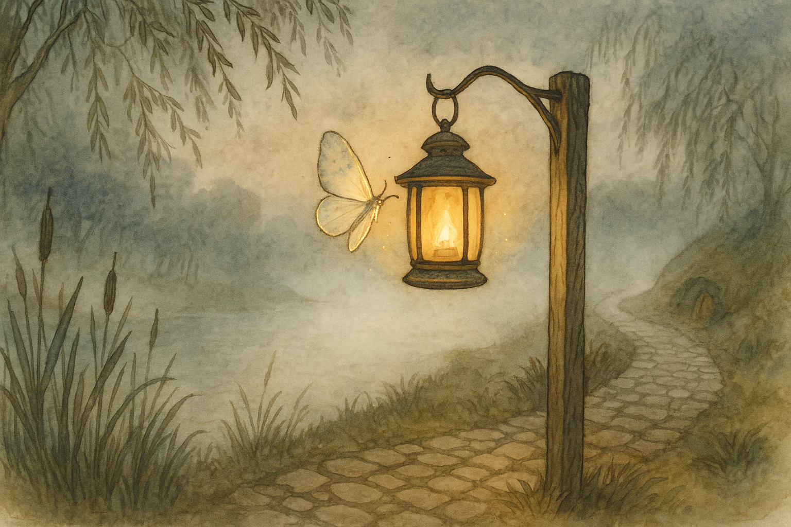

Fourth Age, in Buckland when the Brandywine fog lies thick and the lanterns are shuttered early
In Buckland they speak of the river the way folk elsewhere speak of weather: as something with moods, habits, and an unreasonably long memory. The Brandywine will take your boat if you are careless, and your breath if you are foolish, and your temper if you stand too long on its banks listening to it talk. But it will also give back what it has taken, now and then—if you wait in the right way.
There was a year—not very long after the King’s Peace had settled into the Shire like flour settling after a good shake—when fog came early to the river. It crept up from the low places before supper and stayed until well past breakfast. It lay in hedgerows like wool, and it filled hollows as if the ground itself had grown thirsty for whiteness.
In such a season, Bucklanders grow cautious. They hang lanterns on hooks by their doors. They bring in children before the evening turns grey. They speak a little louder at the inn, as if to reassure themselves that sound still travels straight. And old folk tap their pipes out twice and say, “If you can’t see the far willow, you can’t trust the near ditch.”
Now in that same year there lived in Stock a hobbit lad named Orlo Bracegirdle. Orlo was no fool, but he had a sharp kind of pride, the sort that makes you lift heavier sacks than you ought simply because someone else might be watching. He was apprenticed to a rope-maker—good work in Buckland, where boats and ferries and nets all have their say—and he had hands clever enough to splice a line in the dark.
He also had a notion, put into his head by his own impatience, that all tales told by old folk were only old folk’s way of keeping young feet from going where they pleased.
“The fog’s not a monster,” he said one evening at the Golden Perch. “It’s only fog.”
“Only fog,” repeated old Lalia Underhill, who had seen more winters than Orlo had eaten breakfasts. She stirred her tea as if it were thinking for her. “Aye, lad. And a river is only water, and a net is only string, and a promise is only words—until you find yourself with the wrong thing in your hand.”
Orlo laughed, because young laughter comes easily. “If I can find my way down the Hay Gate Lane with my eyes shut, I can find it with a bit of mist.”
“Then do it,” said Lalia, and though her voice was mild there was a little hook in it, like a burr in wool. “Walk to the Hay Gate and back tonight. No lamp. No companion. And don’t run. Running makes you hear only your own feet.”
It would have been wiser to let the challenge drop, like a pebble into deep water. But Orlo had pride, as I’ve said, and pride does not sink quickly.
“Done,” he said.
There were murmurs then; not the delighted murmurs of those who hope for a foolish show, but the uneasy ones of those who have seen a foolish show end badly. A few offered to go with him. A few offered him a lantern. Orlo refused them all with a grin that meant to be brave and came out a little sharp.
He stepped out into the lane. The fog met him at once, cool on his face, damp in his eyelashes. The inn’s lamplight became a blurry yellow behind him; ahead, the world narrowed to a short grey tunnel with hedges on either side, wet leaves shining like fish-scales when he passed close.
At first it was easy. He knew the lane. He knew the turns. He knew where the stones sat in the mud, where the ditch ran, where the hawthorn leaned in just enough to catch a sleeve if you were thinking of something else. He walked at a steady pace, and the sound of his boots on the packed earth pleased him, because it sounded sure.
Then the fog thickened—no warning, no gradual gentling, just a sudden closeness, as if the air had decided to take offense at being pushed aside. Orlo took three more steps and could no longer see the hedge-top. He could see only the faint suggestion of leaves at shoulder height, and the pale smear of the lane underfoot.
“Only fog,” he muttered, though the words came out smaller than before.
He reached the spot where a birch grew crooked over the path (he knew it, because the rope-maker’s donkey always shied there). He put out his hand to touch the birch and reassure himself. His fingers met empty wet air.
He stopped.
It is a strange thing: the moment you admit, even silently, that you are not sure, the world changes shape. The lane that had been plain becomes two lanes. The hedge that had been friendly becomes only a wall. The noises you trusted become confusing, because you do not know if they are behind you or beside you. Orlo stood very still and listened.
He heard water somewhere. He heard a distant creak that might have been a cart, or might have been an old gate shifting in its post. He heard a rustle close by, and turned his head quickly—too quickly—and the fog seemed to spin with him.
Then, for the first time, he felt fear properly: not a panic that makes you bolt, but a cold, neat fear that sits on your shoulder like a bird and whispers, You do not know where you are.
Orlo swallowed. Pride told him to march on as if he were merely taking a longer way for interest. Sense told him to turn around at once, walk back the way he had come, and take the jeers that might follow (which would have been kinder than what else might follow).
He took one step.
The ground under his boot was softer than the lane. Not mud-soft—water-soft.
He froze, and lifted his foot slowly. The next step would have put him into a shallow ditch, and after that, in this fog, who could say? Ditches lead to drains. Drains lead to the river. The river leads where it pleases.
“All right,” Orlo whispered, because speaking aloud made him feel less alone. “All right. I’ll go back.”
He turned carefully and walked—very carefully—toward where he believed the inn’s light to be. He counted his steps, because counting is a small magic of its own. At twenty he expected to see a faint glow. At forty he expected to smell smoke. At sixty he expected to hear voices.
He saw nothing. He smelled only wet leaves. He heard only his own breath, and the distant water that sounded nearer than before.
Orlo stopped again. His mouth was dry. His hands, which had always been sure of rope, were not sure of air.
It was then that he saw a light.
Not a lantern’s glow, not a window-light—nothing steady. It was a small pale flicker, like a spark caught in mist. It moved, disappearing and returning, never quite in the same place. Orlo stared at it until his eyes ached, trying to decide whether he was seeing truly or whether fear had begun to paint on the fog.
The light drew closer. As it came, it took on a shape: a moth, large as Orlo’s thumb, with wings as pale as milk. Along the edges of those wings ran a faint gleam, not bright like flame but soft like moonlight on water. It fluttered in the fog with a slow, unhurried beat, as if it had all night and no need to spend it hastily.
Orlo’s breath caught. “A lantern-moth,” he whispered, because he had heard the name once, in a tale he had half listened to while tying knots.
The moth circled in front of him, then drifted a little way down the lane—or what Orlo thought was the lane—and hovered, waiting.
Orlo took a step toward it, then another. The moth moved on, always just ahead, never rushing, never leaving him behind. He followed, because there was nothing else in the fog that offered itself as a guide.
After a dozen steps, Orlo felt the ground underfoot change: firmer, with small stones pressed into it. The water-sound lessened. The hedge brushed his sleeve again. The world began, slowly, to remember its proper shape.
And then—through the mist—he saw a faint yellow blur that grew into the inn’s lantern. He smelled pipe-smoke. He heard laughter.
The moth hovered once more before him, then turned in a small loop, as if making a bow, and vanished into the fog as neatly as a thought slipping away when you try to catch it.
Orlo stood on the inn’s step with his heart hammering, wet to the knee, and looked back down the lane. It was only fog. Only fog. Yet he felt as if he had walked a long way in a short time, and come back older.
Inside, the room quieted as he entered. Lalia Underhill looked up from her tea.
“Well?” she said.
Orlo opened his mouth. Pride tried to climb back into it at once, to say: I did it. See? Easy enough. But the memory of the ditch, and the soft patient light ahead of him, pressed pride down like a thumb on a candle-wick.
“I got lost,” he said, simply.
There was a silence. Then, to Orlo’s surprise, nobody laughed.
Lalia nodded. “Aye,” she said. “Fog does that.”
“And I saw… a lantern-moth.”
At that there were small movements—people shifting in their chairs, a pipe being set down. One old Bucklander crossed himself in the old manner, though the King’s folk might have called it superstition.
“Did you try to catch it?” Lalia asked, and now there was sharpness in her mild voice.
Orlo frowned. “Catch it? Why would I?”
“Because you are young,” said Lalia, “and young hands want to close on any wonder to prove it was real. And because there are folk—elsewhere, mostly—who think every light they see is meant to be owned.”
Orlo remembered the moth’s slow beat, the way it had waited for him. “No,” he said. “I followed.”
Lalia let out a breath. “Good. Then it will come again, if you ever need it.”
“Will it?” Orlo asked, and now his voice held something new: not mockery, but a cautious hope.
“Sometimes,” said Lalia. “Not when you go looking for it like a treasure-hunter. Not when you think you deserve it. It comes to those who are lost and willing to be led.”
Orlo sat down very slowly. Someone pushed a mug of hot cider toward him. He wrapped his hands around it and felt his fingers begin to thaw.
Afterward, when the talk had returned to ordinary things—nets and cakes and who had borrowed whose wheelbarrow—Orlo leaned toward Lalia and said in a low voice, “Is it truly a moth?”
Lalia smiled, which made her look, for a moment, like someone much younger. “It looks like one,” she said. “And it behaves like one, in that it circles lights and disappears. But I have heard it said—by a traveller from the Southfarthing, of all places—that the lantern-moth is not drawn to flame. It is drawn to homesickness.”
Orlo blinked. “Homesickness?”
“Aye,” said Lalia. “Not the kind that makes you weep into your pillow when you’re away. The quieter kind: the ache that tells you you have stepped off the true path of your own heart. The lantern-moth does not lead you to a particular door. It leads you back toward yourself.”
Orlo sat with that for a while. Then he said, “If someone did try to catch it—what then?”
Lalia’s eyes went to the window, where the fog pressed against the glass as if listening. “Then the light goes out,” she said. “And the fog grows thicker. And you learn, in the coldest way, that some guides cannot be forced to be yours.”
Orlo nodded, and though he did not understand it all, he understood enough to feel ashamed of his earlier laughter.
The next day he walked the Hay Gate Lane again, in clear weather. He found the crooked birch he had missed. He found the ditch that had almost taken him. He stood by it a moment, looking at the shallow water and the bright sky above, and he said aloud (because some apologies should be spoken where the mistake was made), “Thank you.”
If you ask whether he saw the lantern-moth again, I cannot answer neatly. Some say he did, years later, when he went down to the river in the night to fetch a frightened child who had wandered from a party. They say the fog that night was thick as wool, and yet Orlo returned with the child asleep on his shoulder and a small pale light fluttering ahead like a patient thought.
Others say the lantern-moth is only a tale to make young folk take lamps and go in pairs. Perhaps so. But I have walked by the Brandywine on a foggy evening, and I have seen a pale gleam circle a lantern-glass once, very softly, as if greeting an old friend.
And I have learned this much, which is the only moral worth keeping: if you are lost, you must first admit it. That admission is the opening of the lantern’s shutter; and only then do small lights dare to come near.
— Bilbo